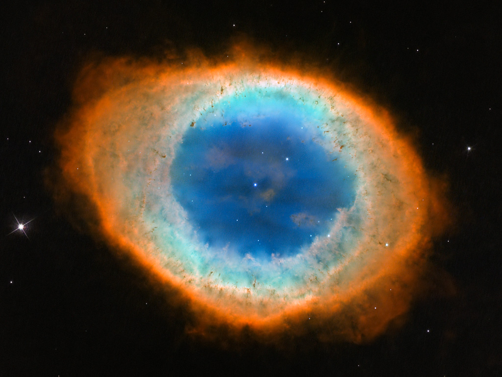

A estrela brilhante no centro da NGC 3132, embora proeminente quando vista pelo Telescópio James
Webb da NASA/ESA/CSA em luz infravermelha próxima, desempenha um papel coadjuvante na escultura da
nebulosa circundante. Uma segunda estrela, pouco visível no canto inferior esquerdo ao longo de um
dos picos de difração da estrela brilhante, é a fonte da nebulosa. Ele ejetou pelo menos oito
camadas de gás e poeira ao longo de milhares de anos.
Imagem capturada pelo telescopio Hubble

Mas a estrela central brilhante visível aqui ajudou a "agitar o vaso", mudando a forma dos anéis
altamente intrincados desta nebulosa planetária, criando turbulência. O par de estrelas está preso
em uma órbita apertada, o que leva a estrela mais fraca a pulverizar material ejetado em uma
variedade de direções à medida que orbitam uma à outra, resultando nesses anéis irregulares.
Centenas de linhas retas e iluminadas atravessam os anéis de gás e poeira. Esses "holofotes" emanam
da estrela brilhante e fluem através de buracos na nebulosa como a luz do sol através de lacunas em
uma nuvem.
Mas nem toda a luz das estrelas consegue escapar. A densidade da região central, deflagrada em
marés, reflete-se pela sua transparência ou opacidade. Áreas que são mais profundas indicam que o
gás e a poeira são mais densos e a luz é incapaz de se libertar.
Dados da Câmera de Infravermelho Próximo do Webb (NIRCam) foram usados para fazer essa imagem
extremamente detalhada. Ele está repleto de informações científicas e as pesquisas começarão após
seu lançamento
Esta não é apenas uma imagem nítida de uma nebulosa planetária ela também nos mostra objetos na
vasta extensão do espaço atrás dela. As seções vermelhas transparentes da nebulosa planetária e
todas as áreas fora dela estão cheias de galáxias distantes.
Procure a linha angulada brilhante no canto superior esquerdo. Não é luz das estrelas é uma galáxia
distante vista de perto. Espirais distantes, de muitas formas e cores, também pontilham a cena. As
que estão mais distantes ou estão muito empoeiradas são pequenas e vermelhas.
Crédito:
NASA, ESA, CSA, STScI e a equipe de produção do Webb ERO